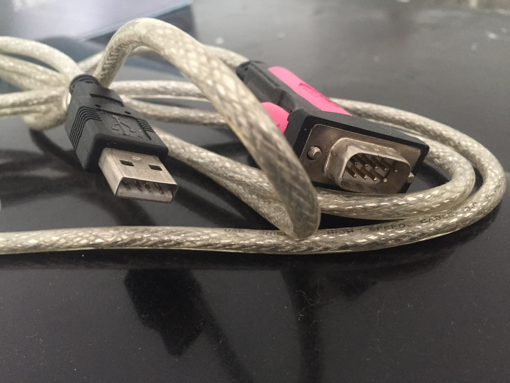
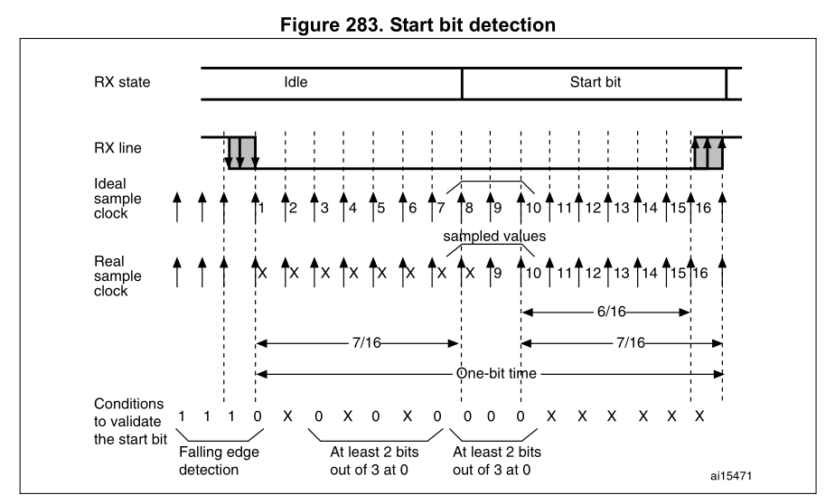
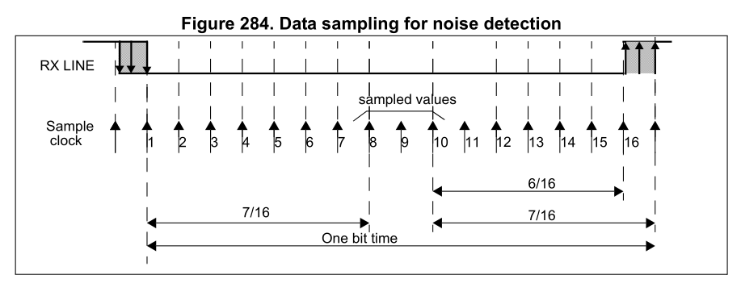

UART: Universal Asynchronous Receiver/Transmitter, 通用异步收发器。

USB转串口线缆
*wikipedia*维基百科是质量很好的百科网站。现在国内的网络环境已经无法直接访问维基百科了，之前还可以访问英文版的。这一话题有可能在之后介绍。
从这里进入维基百科UART条目(无图)。wikipedia_zh:UART.html
建议先看一下百科有基本的认识。
UART也叫串口，异步串行通信口。能想到的实例存在于电脑主机箱，机顶盒，交换机console，工控机，传感器数据采集器等。多用于调试，数据传输。
常用的RS-232规范，wikipedia_zh:RS-232.html
USB转串口，现在笔记本电脑甚至台式电脑上都不再提供串口了。有个办法就是使用USB转串口。 照片是力特的一款USB转串口线缆，据资料介绍，内部使用的USB-UART芯片为FT232，作用是USB协议与UART协议转换。再配合RS232电平转换电路、USB和DB9接头及线缆就可以构成了这种产品。
由于没用共同的时钟信号，通信双发需要各自配置约定好的时钟频率，波特率。常见的配置8N1，即8位数据、无奇偶校验、1个停止位。波特率常见9600和115200bps。
UART包括了rs232/485/422 接口和总线规范。不同场景，如开发调试时可以用逻辑电平的，不过通常采用RS232电平。RS232以地作为参考，正电平代表0，负电平代表1，传输距离短（推荐15米以内）。RS485只包括电气规范，采用差分信号有更强的抗干扰扰能力，可以传输更远，工控环境。
串行：数据是按一位一位传输，并行：数据每次按多个位（如八位）传输的。
一般较远距离电信号传输多采用串行方式。并行多用于较近距离传输。
并行，数据线之间存在干扰，用料也更多。
同步，双方有一个同步时钟。异步，双方使用各自时钟，不使用同步时钟。
异步，由于使用各自的时钟，通过对起始位检测，按每一帧重新算起，不然会有累积误差。输入数据信号与时钟信号边沿的时差会存在较大范围的变动。
作为通信接口，UART较为简单。即使这样，都已经达到中/大规模集成电路。
收发器
移位寄存器是UART里面的关键，负责数据串并行转换。数字电路课本里有描述。
这里提一下接收器起始位及数据检测。因为没有同步时钟，数据的到来不是伴随着共用的时钟信号。接收器需要对电平进行采样来确定什么时候开始。

上图是STM32F103微控制器USART外设起始位检测，采样序列1110X0X0X0000
一位的时间内有16个采样点，图中前三个采样高电平确定RX处于空闲状态（|停止位），一旦起始位到来，RX拉为低电平，第四个采样值为低电平说明探测到了下降沿（起始位第一个采样点）。随后再间隔采样3个低电平（至少2个）确定保持低电平。这时来到中间段(图中8、9、10采样点），在这里对数据进行采样确定值，采样3次，至少2个低电平确定这是有效的起始位。

上图是STM32F103 UART 数据噪音检测，后续的数据只检测中间段，采样3次，必须是111对应高电平或000对应低电平，其他情况视为数据受到噪音干扰。
半双工：系统中两台设备可以双向传输，但是不能同时进行。
全双工：可以双向同时传输。
单工：只能单向传输。
按全/半时，单/双向工作，更好理解记忆。
单独的UART芯片自己还没有见过。网上搜索有TL16C752D或国内的WK2114等型号可用。UART多作为片内外设集成到其他芯片（如微控制器）内部。即使是那台十年前的主机也将UART 电路集成到了super I/O芯片当中了。
DB9接头。其实我们这代对它并不陌生。小时候的游戏手柄9孔接头就是。
曾遇到过这样情况，没有信号或数据传输不稳定、时有时无，务必确认接头连接良好。这种问题有时非常隐蔽，两头插件都对接好了，但中间金属弹片与金属柱没有良好的接触。经常插拔接头会造成这种情况。另外也可能是接头质量问题。品质较差的插座、插排使用一段时间后容易接触不良与此类似。